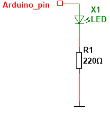
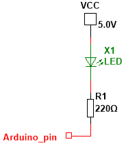

Nog twee termen die wat verduidelijking verdienen. Een pin van de Arduino kan een stroom "sourcen" of "sinken". Sourcen (van het Engelse source: bron) betekent dat de pin zich als bron gedraagt en de stroom zal leveren aan de externe schakeling.
"Sinken" is het omgekeerde: de stroom zal nu van de externe schakeling binnenvloeien in de Arduino via de pin. We kunnen dit aantonen via twee eenvoudige ledschakelingen.

In bovenstaande afbeelding zal de Arduino-pin de stroom sourcen wanneer op die pin een 1 staat. De pin gedraagt zich als bron en levert de stroom om de led te laten branden. De absolute maximum stroom die een pin kan sourcen is 40 mA. In de praktijk hou je beter zo'n 20 mA per pin aan als veilige waarde. Bij 20 mA is de spanningsval van de output beperkt en richting 40 mA zakt je outputspanning bij high merkbaar weg en loopt de chip warm.
De Arduino UNO / Leonardo heeft zo'n 20 pinnen die je als uitgang kan configureren, maar de totale som van alle stromen door de VCC- en GND-pinnen mag niet boven 200 mA komen. Je mag dus zeker niet verwachten dat je in totaal zo'n 400 mA (20 x 20 mA) of 800 mA (20 x 40 mA) aan stroom uit je Arduino kan halen.

Bij deze configuratie zal de voedingsbron Vcc de stroom leveren die door de led en de weerstand vloeit, en die binnenstroomt in de Arduino-pin. De Arduino zal die stroom inwendig afleiden naar massa, uiteraard op voorwaarde dat op de Arduino-pin een 0-niveau staat. Dezelfde waarden: maximum 40 mA per pin, nominaal 20 mA per pin, maximum 200 mA in totaal zijn hier ook van toepassing.